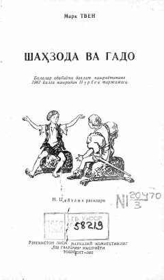

SVTashqi ko'rinishi bir xil shahzoda va kambag'al bolaning sarguzashtlari.
Mark Tvenning mashhur romanida tashqi ko'rinishi bir xil bo'lgan shahzoda Eduard va kambag'al bola Tomning taqdirlari o'rin almashib qolishi hikoya qilinadi. Asar insoniylik, adolat va jamiyatdagi tengsizlik kabi mavzularni yorqin ochib beradi. Mazkur tarjima o'quvchilarga o'zbek tilida taqdim etilgan.